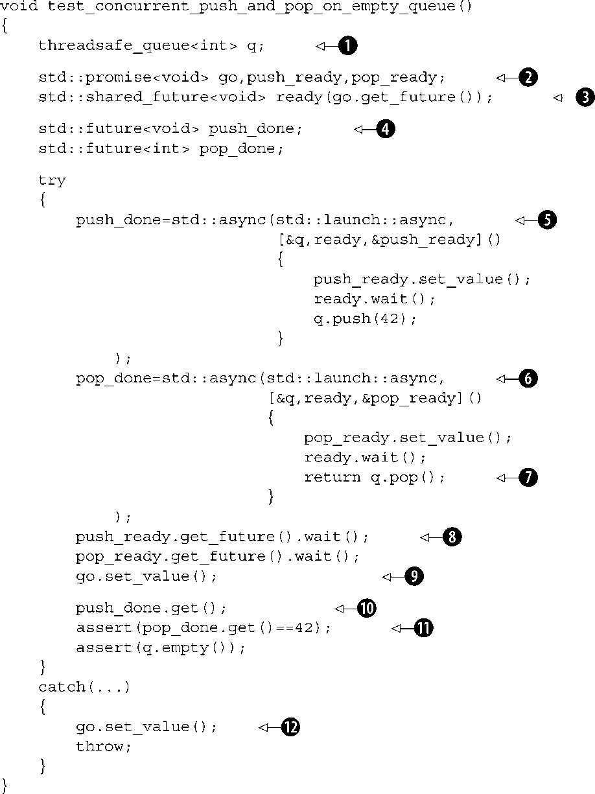

本章主要内容
到目前为止，我主要介绍了写并行代码有哪些可用到的工具，怎么使用它们，以及代码的整体设计和结构。本章将要介绍软件开发的另一个关键步骤：测试和调试。如果你想通过学习本章来寻找测试并行代码的一个简单方法的话，那么，要让你失望了。测试和调试并行代码是非常难 的。本章主要向你介绍一些比较常用而且重要的测试和调试技巧。
测试和调试就相当于一个硬币的两面——测试代码寻找错误，调试代码纠正错误。幸运的话，你自己调试出所有的错误，而不是让使用该应用的人发现代码漏洞。在我们介绍测试和调试之前，重要的是理解可能会出现哪些问题，让我们先来看看这些问题。
在并发代码中，你几乎会碰到任何类型的错误，但是，有些类型的错误仅会在并发代码中出现，本书仅关心这些与并发相关的错误。这些并发相关的错误主要分为两大类。
这两大类又分为很多小类，首先我们来看不必要的阻塞。
不必要的阻塞是什么意思？首先，线性阻塞是指线程因为要等待某些条件（如互斥元、条件变量、时间等）无法继续运行时所处的状态。多线程代码中，常用这些条件，而这些条件常常无法获得满足，因此就出现了不必要的阻塞问题。我们接着又会提出下一个问题：为什么这个阻塞是不必要的？因为有其他一些线程在等待该阻塞的线程执行一些动作，如果该线程阻塞的话，其他线程也势必阻塞。不必要的阻塞又分成以下几种。
上面简要的介绍了几种不必要的阻塞类型，那么什么是竞争条件呢？
竞争条件是多线程代码中的问题最常见的原因——许多死锁和活锁实际上是竞争条件的表现。并不是所有的竞争条件都是有问题的—竞争条件发生的时间取决于各个独立线程操作的先后顺序。许多竞争条件是有益的。例如，到底哪个线程来处理任务队列中的下一个任务是不确定的。然而，许多并发错误的产生是由于竞争条件。竞争条件常常产生下面几种错误类型。
join()
来让数据等到线程完成后再销毁，那你需要保证当发生异常时，可以跳过join()
函数的执行，这是线程异常的基本安全保障。
竞争条件是问题杀手。死锁和活锁会导致任务长时间得不到执行。通常，你可以添加一个调试器来运行区分哪些线程陷入死锁或者活锁，并且哪些并发对象是相互矛盾的。
在整个代码的任何地方都可能出现上面介绍的数据竞争、破坏变量和生命周期的问题的症状（如随机崩溃或者不正确的输出），代码可能会重写后面其他程序可能会用到的内存，导致编译出错。编译给出的错误定位往往完全与出错代码无关，可在程序执行很久后，才能暴露该错误。这类错误往往是由共享系统内存造成的，就算你小心翼翼地试图指定某线程访问某数据，并且保证正确同步，但是，任何线程都有可能重写应用程序中其他线程需要使用的数据。
至此，我们简要明确了我们将要遇到的错误类型，下面让我们看看，我们该怎样来定位错误实例，并解决它们。
在前面的内容中，我们学习了在代码中可能会遇到的并发相关的错误类型，以及这些错误的表现形式。对上述知识有所了解后，你可以检查你的代码，并找出错误可能出现在哪里，你可以先尝试确定某段代码是否有错。
也许最显然最直接的方法，就是查看代码 。这虽然看似明显，但实际上是很难贯彻的。当你阅读自己刚写的代码时，很容易读成你想要写的，而非你真正写的。相似地，如果要你阅读他人写的代码时，你快速阅读可能定位和解决一些简单的问题，一些重大或比较隐晦的问题，则需要我们花大量的时间去梳理代码，考虑可能出现的并行问题和非并行问题。在下面的代码中，我们将具体问题具体对待。
就算是检阅你自己的代码，你还是可能会漏掉一些错误。因此，无论何时，你都要确保你的代码可以执行，即使代码无法顺利执行，你也要保持平和的心态。因此，我们会介绍一下与检阅代码相关的一些多线程测试和调试技巧。
正如前面提到的，当检阅多线程代码来纠正并行相关的错误时，彻底仔细地阅读非常重要，要像一把细齿梳子一样仔细地阅读代码。如果可能让他人帮你检阅你的代码，因为他们没有参与代码的编写，他们不得不想清楚代码是如何工作的，因此，会发现很多遗漏的错误。这需要代码的阅读者有充足的时间来仔细负责地检阅代码，而不是简单快速地过一遍。大多数并行错误不是简单快速的扫视代码所能发现的，这些错误往往需要微妙的时机才会出现。
如果你让你的同事帮你检阅你的代码，这个代码对他来说是完全陌生的。因此，他们会从不同的视角来看问题，并指出一些你未发现的错误。如果你找不到同事帮你检阅代码，你可以找朋友帮忙，甚至将代码发到网络上寻求帮助。如果你实在找不到人帮你检阅代码，或者，他们也无法找出问题，别急，你还可以这么做。对于初学者来说，将代码搁置一段时间，去做其他事情，如编写该程序的其他部分、读书、散步等。在这段时间内，当你集中精神做其他事时，你的潜意识还在想着这个问题。同时，当你重新回到该代码时，代码已经不那么熟悉了，这样你可能就会以一种不同的视角来检阅你的代码。
让别人审阅代码的替代方法是自己审阅。一个有用的技巧是试图解释它是如何工作的细节 给别人。这个别人甚至可以不是实体的人，如布偶熊或橡胶鸡，我个人认为编写详细的注释极有帮助。你要解释，每一行代码有什么作用，会发生什么，访问的数据等。你要不断地自我提问并解释回答。通过不断地问自己这些问题，并仔细思考它的答案，问题常常自己就会暴露出来，你会发现这真是一个难以置信的发现错误的有效方法。这些问题对于检阅任何 代码都是有用的，而不仅对于检阅你自己的代码。
正如我说的，代码阅读者在阅读代码时思考一些与代码相关的特定问题是非常有用的。这些问题会使阅读者集中注意力到一些代码相关的细节上，并且帮助发现一些潜在的错误。下面列出一些具体的而非全部的，我喜欢问的一些问题。你也可以找到其他一些你比较关注的问题。不再多说了，先将这些问题列出以便参考。
最后一个问题是我最喜欢问的问题，因为它确实能帮我理清楚线程之间的关系。通过假设某行代码存在错误，你就可以像个侦探一样追查原因。为了说服你自己，代码没有错误，你需要考虑到所有情况和可能排序。当数据在其生命期内受多个信号量保护时，这个方法非常有用，例如，使用第6章中给出对线程安全序列，这个安全的队列的头和尾对应不同的信号量，你必须要保证线程持有的另一个信号量不会访问相同的队列元素。这个问题还会使得对公有数据或者其他代码能够很容易得到该数据指针或引用的私有数据进行特定审查的问题更加重要和明确。
列举的倒数第二个问题同样也很重要，因为它解决了一个常常会犯的简单错误，如果你释放后再重新获取该信号量你必须假设其他线程已经修改了该共享数据。很明显，如果互斥锁因为它们对于对象来说是内部的不是立即可见的—你可能在不知不觉中就那么做了。在第6章中，可以看到当函数提供线程安全数据结构时太细粒度的时候，是如何导致竞争条件以及错误的。但是，对于一个非线程安全的栈来说，栈可能会被多个线程并行访问，让top()
和pop()
操作独立开来是必要的，那么，共享数据被修改的情况将不再会出现，因为内部互斥元的锁在这两个调用之间就已经被释放了，因此，另一个线程就可以修改栈了。第6章中，解决的办法是将两个操作结合起来，所以它们都在同一互斥锁的保护下执行，从而消除了潜在的竞争条件。
那么，让我们来回顾一下你自己的代码（或者他人的代码），你要确保没有代码错误。你该怎样测试你的代码确保无错或否定你代码无错的信念，只有试过才知道。
开发单线程应用时，应用测试比较简单耗时。首先，你需要区分所有可能的输入数据集（至少包括一些典型的输入测试集）并且对这些输入数据集进行测试。如果应用程序能够正确执行并且产生正确的输出，说明这个应用程序对于给定的输入集能够正常运行。如果测试到错误状态，处理则会比正确运行的情况复杂。但是，基本思想是相同的——建立初始化条件执行应用程序。
测试多线程代码相对于单线程来说难得多，因为合理的调度线程是不确定的，因此线程调度的差异会导致运行的变化。因此，即使应用程序运行同一组输入数据，如果代码中潜伏有竞争条件的话，仍然有可能会导致有时运行正确有时运行出错。因为有潜在的竞争条件并不意味着代码执行总是失败，仅仅是有时有可能会失败 。
鉴于固有的难以再现并发相关的错误，因此，需要仔细地设计测试程序。你希望每次测试能够确定问题可能存在的最少的代码，那么当测试失败时，你就可以更好地隔离出错代码——测试并行队列最好能够直接测试并行压栈和出栈工作而不是测试使用并行队列的整个代码块。这样有助你思考该怎样设计测试代码——参考本章后面的易测性设计小节中的内容。
我们值得通过测试消除并发来证明问题是并发相关的。如果你让所有程序运行在一个线程时出错，该错只是一个普通的错误而非一个并发相关的错误。追踪错误的初始发生位置而不是被你的测试工具测试发现的错误位置是非常重要的。这是因为即使错误发生在你应用的多线程部分，也并不意味着它就是并发相关的。如果你使用线程池来管理并发等级，通常你可以通过设置配置参数来指定工作线程。如果你手动地管理线程，你就需要修改代码以便使用单个线程测试来进行测试。一方面，你可以将你的线程减少到一个，这样就可以根除并发；另一方面，如果在单核 系统中没有错误（即使是一个多线程应用），但是在多核 系统或多处理器 系统中出错，那么就是竞争条件错误和可能同步或内存顺序错误。
比代码结构更加重要的是测试代码的并发性，测试代码的结构仅仅跟测试环境一样重要。如果你连续用一个测试实例来测试并发队列，你需要考虑以下各种不同的应用场景。
push()
或pop()
来验证该队列工作在基础级别。
push()
同时另一个线程调用pop()
。
push()
。
push()
。
pop()
。
pop()
。
pop()
，该队列的总长度不够，无法满足所有线程。
push()
和一个线程调用pop()
。
push()
和一个线程调用pop()
。
push()
和多个线程调用pop()
。
push()
和多个线程调用pop()
。
考虑完上述所有场景或者更多场景后，接着你需要考虑关于测试环境的附加因子。
对于特殊情况需要考虑附加因子。鉴于对以上四种环境的考虑，第一种和最后一种环境会影响测试代码自身的结构（参见10.2.5节），其他两种与正在使用的物理测试系统有关。使用到的线程数与特定的被测试代码有关，但是，可以通过构建测试代码的不同的方式来得到合理的时间顺序表。在我们学习这些技术之前，让我们来看看怎样设计一个便于测试的应用代码。
测试多线程代码是困难的，所以你会想怎样才能使代码易于测试呢？你能做的最重要的事情之一就是设计 易于测试的代码。现有设计易于测试代码的技术大都用于单线程代码，但是，其中许多技术也同样可以应用多线程。通常，做到以下几点后，代码就比较易于测试了。
所有以上提到的都可以应用在多线程代码中。事实上，我认为上述几点更多的应用于解决多线程代码的易测性而非单线程代码的易测性。上述最后一条非常重要，即使你编写应用代码之前，此时还远没有到写测试代码的那一步，在你编写应用代码之前也有必要考虑怎样测试它——使用什么样的输入，哪些条件下可能会出错，怎样找到代码潜在的错误等。
设计易于测试的并行代码最好的方法之一就是消除并发。如果你可以将代码分割成多个部分，在一个单线程内由这些部分来负责要操作的通信数据与多个线程之间的通信路径，这样，你就极大地减少了问题。操作被一个单线程访问的数据时的这些应用部分可以使用正常的单线程技术来进行测试。这样，那些难以测试的用于处理线程之间通信和确保一个时间内仅有一个线程访问特定数据块的并发代码部分就变得比较少，测试出现错误时，也更加容易进行追踪错误源头。
例如，如果你的应用被设计成一个多线程的的状态机，那么你就可以将它分解成多个部分。用于为每个可能的输入集确保状态转换和操作的正确性的线程的状态逻辑可以通过单线程技术独立的进行测试，并且通过测试工具提供的测试输入集，可以同样应用到其他线程。接着，通过测试代码中特别设计多并发线程和简单的状态逻辑，核心状态机和确保各事件按正确的顺序到达正确的线程的信息路由的代码可以独立的进行测试。
可选地，如果你将代码分解成多个代码块，读共享数据/迁移数据/更新共享数据 ，你可以使用所有的单线程技术来测试迁移数据 代码块部分，因为此时这部分代码仅是一个单线程代码。测试一个多线程迁移困难的问题可以降级为测试读共享数据块和更新共享数据块中的一个，哪个简单选哪个。
需要注意的是库函数调用能够使用内部变量来存储状态，然后，如果多个线程使用相同的库函数调用集在多线程之间实现共享。因为代码访问共享数据不是立即表现出来的，因此，多线程的共享还存在一些问题。然而，随着你对这些库函数调用的学习，多线程共享仍然是个问题。这时，你要么添加适当的保护和同步或者使用可替代的对于多线程的并行访问来说安全函数。
设计多线程的易测性比你构建代码以减少用来处理并发相关的问题代码和注意对于一些非线程安全的库函数调用代码的代码量来说更为重要。在浏览代码时，记得问一下自己10.2.1小节中的问题是非常有用的。尽管这些问题可能不是直接关于测试或易测性的，但是，如果你事先在你的测试代码中考虑到上述问题并且考虑如何测试你的代码，那么，做出的设计选择可能不同以使测试更加简单。
既然我们学习了合理的设计代码可以使测试变得更加容易，潜在地修改代码来从“单线程部分”（这个单线程仍可以通过并发模块与其他线程进行交互）隔离“并发部分”（比如线程安全容器或状态机事件逻辑），下面让我们来学习测试并发代码的相关技术。
你需要思考你想要测试的场景并且编写一些小的代码来测试函数功能。那么，你怎样确保那些存在潜在的问题的时间调度通过小的测试练习解决它的潜在错误呢？
事实上，有许多方法可以做到这点，如暴力测试或者压力测试。
暴力测试的核心思想是穷举所有可能情况看代码是否能够正常而不出现错误。最典型的方法是多次运行代码，并且尽可能地一次运行多个线程。如果一个错误仅在多个线程以某一特定顺序运行时出现，那么运行的代码越多，出错的可能性就越大。如果你仅测试一次并且通过了测试，你可能自信地以为代码没有问题，能够工作。如果你一批运行十次并且每次都能通过测试，你就会更加自信。如果你测试了十亿次，并且每次都通过测试，那你就会对你的代码自信无比。
你的自信程度取决于你通过测试的次数。如果你的测试结果非常精确，测试甚至可以精确地概括到线程安全队列的话，这样的穷举测试会让你对自己的代码无比自信；另一方面，如果被测试的代码非常的多，可能的排列数非常多，运行即使十亿次也仅会产生一点点自信。
穷举测试的缺点是它可能会让人产生盲目的自信 。可能你编写的测试环境不会产生错误，就算你运行多次也不会出现错误，但是，换一个稍微不同的环境就会每次测试都出错。最坏的情况就是在你的测试系统中不会出现有问题的测试环境因为你测试是在一个特殊的环境。除非你的代码运行的环境与你代码测试运行的环境一模一样，并且相应的硬件和操作系统也不会引起任何错误出现。
这里给出的一个典型的例子就是在一个单处理系统上测试一个多线程应用。因为每个线程都要求运行在同一个处理器上，所有的任务都是自动串行进行的，那么在多处理器上可能遇到的许多竞争条件和双向缓存问题在单处理器系统中都不复存在了。这不仅仅是变量的问题；不同的处理器体系结构产生不同的同步和设备时序问题。例如，在x86和x86-64体系结构上，自动加载的操作通常是一样的，但是是否标识memory
_order
_relaxed
或者memory
_order
_seq
_cst
是不同的（参见5.3.3节）。这意味着那些编写的代码可以在放松内存顺序的x86系统上正确运行，而在有着精确时序操作指令集系统如SPARC系统中会运行失败。
如果你需要你的应用能够方便的在多个目标系统运行，那么在这多种系统上进行一些有代表性实例的测试是非常重要的。这就是我为什么在10.2.2节测试环境中列出被使用的处理器体系结构的原因。
避免潜在的盲目自信的关键是成功地进行穷举测试。这需要仔细考虑测试设计，不仅考虑与被测代码单元的选择，还要考虑测试工具的设计和选择测试环境。你需要保证尽可能多的方法测试代码，也要尽可能考虑所有可行的线程交互。
尽管穷举测试确实能给你带来自信，但是，穷举测试无法保证找到所有问题。这里介绍一种可以找到所有问题的技术，我们称之为组合仿真测试 。这种测试技术要求你花时间将它应用到你的代码和合适的软件中去。
这有点绕嘴，因此我最好先解释一下我的意思。组合仿真测试是指在一种特殊的仿真代码真实运行环境的软件上运行你的代码。你将注意到这个软件允许你在一个单物理计算机上运行多个虚拟机，这些虚拟机和硬件的特性是被上层软件竞争调用。不同于仿真系统，模拟软件能够记录线程数据访问、锁、原子操作等的先后顺序。然后，使用C++内存模型的规则重复运行每组允许的组合 操作来识别竞争条件和死锁。
虽然如此全面的测试组合能够保证找到系统中的所有错误，但是，许多小的错误，往往需要花费大量的时间来发现它，因为组合操作的排列数会随着线程数和每个线程的操作数增长而呈现指数增长的趋势。因此组合测试技术最好保留到对代码片段进行精细测试时再用，而不是应用对整个应用程序的测试。组合测试的一个明显的缺点就是它需要依赖于仿真软件处理你代码中操作的能力。
组合测试技术可以用来在正常条件下反复测试你的代码，但是，这种技术可能会漏查一些错误，因此，你需要一种技术，这种技术可以让你在各种特定的条件下反复测试你的代码。有这样一种技术存在吗？
使用在测试运行时发现问题的库函数就是这样一种技术。
尽管这种技术无法提供全面检查组合的模拟测试，但是，你可以使用一些特别的库函数同步基本单元来找到大部分错误，这些同步基本单元如互斥元、锁和条件变量等。例如，常用的要求对一块共享数据使用互斥锁。当你访问数据时，如果检测到互斥锁，就可以证实当访问数据时，调用线程已将该互斥元锁住了并且报告访问失败。通过标记你的共享数据，你可以使用库函数来检查数据共享。
如果有一个特殊线程一次拥有多个互斥元，应用库函数还可以记录锁的顺序。如果另一个线程在不同的时序锁住该互斥元，即使测试运行时没有出错，也会将之标记成一个可能的 死锁。
测试多线程的另一类特殊的库函数是通过多个线程中将获得锁的那个线程或者通过notify
_one()
函数调用一个竞态变量的线程的控制权交给测试人员来实现线程的原子属性，如互斥元和条件变量。这样可以让你建立特定的测试场景并且验证代码在这些特定场景内是否能顺利运行。
此外，在C++标准库函数中也有一部分可用于测试的库函数，我们可以在我们的测试工具中调用这些标准库函数。
看完执行测试代码的不同方式之后，现在我们来看看构建测试代码来实现你希望的调度顺序的方法。
前面的10.2.2节中，我告诉大家你要找到方式来为你测试程序的“while”部分提供某种可行的调度顺序，下面我们将要学习在这一过程会遇到的问题。
基本的问题是，你需要安排一组线程，这组线程中的每个线程在你指定的时间内都可以执行一段选定的代码。最常见的情况是，你有两个线程，但是这可以很容易地扩展到更多。在第一步中，你需要区分每个测试的不同的部分。
为了更进一步解释，我们来看看10.2.2节的测试列表执行一个特定的例子，一个线程用于对一个空队列调用push()
，另一个线程则用于调用pop()
。
通用
启动代码很简单，就是你必须创建队列。执行pop()
的线程没有线程特定的启动代码。而对于执行push()
函数的线程来说，它的线程特定的启动代码依赖于队列的接口和存储对象的类型。如果将要存储的对象很难构建或者必须是堆分配的，那么，你可以将这个存储对象的构建过程或堆分配过程作为线程特定的启动代码，这样存储对象的构建过程或堆分配过程就不会影响你的测试了。相反，队列仅存储普通的int
类型，那么就不需要在启动代码中构建int
型。被测试的实际代码是相当明确的——就是对push()
和pop()
的调用。那么，在这个例子中，哪个是“结束后”的代码部分呢？
在这个例子中，那段“结束后”的代码部分就取决于你希望用pop()
函数来做什么。如果你用它来阻塞线程直到队列有数据为止，那么，你可以明确“结束后”代码获取向push()
函数提供的返回数值和队列置空。如果pop()
不用于阻塞线程，并且在队列为空时结束，那么你需要测试两种可能性，要么pop()
函数返回向push()
函数提供的数据，要么队列为空或者pop()
函数指示没有数据并且队列中有一个元素。当其中的任意一种可能性为真时，你希望避免的是场景是pop()
函数显示“没有数据”而且队列是空的，或者pop()
函数返回值，但是，队列却仍然
不为空。为了简化测试，假设你有一个阻塞pop()
函数。那么最后的代码就是出队列的数据即为进队列的数据，并且队列为空。
至此，我们已经区分了代码的不同部分，接着你就要尽量让一切代码都按计划运行。一个可行的办法是使用一系列的std::promises
来指示一切就绪。每个线程设置一个promise来指示该线程已准备就绪，接着等待从第三方std::promise
获得的一个（或者一个副本）std::shared
_future
；主线程等待所有线程的所有promise被设置，然后控制这些线程运行。这就保证了在并行程序运行之前每个线程都已被启动，任意线程特定的启动代码必须在线程的promise设置之前就被执行。最后，主线程要等待所有线程结束并检查最终的状态。你同时还需要注意线程异常还确保不会有任意一个线程需要等待还未发生的操作信号。清单10.1给出了这个例子的测试代码。
清单10.1 队列上当前调用的push()和pop()的测试例子

这一结构很好地呼应了我们前面的介绍。首先，创建空队列，这部分作为通用启动代码➊。然后，为所有“就绪”信号创建各自的promise➋，并且为go
信号获取一个std::shared
_future
➌。接下来，你可以创建future来表示线程已经运行结束➍。这些需要程序跳转到try
模块之外，这样你就可以为异常设置go
信号而无需等待测试线程运行结束（因为在测试代码可能出现死锁—将死锁限制在测试代码内部是一种相当理想的情况）。
在try
模块内部你可以启动线程➎、➏——你可以使用std::lanch::async
来保证任务在其各自的线程上运行。注意使用std::async
可以你的异常安全任务相比于使用普通的std::thread
来说更为简单，这是因为future的析构函数在整个线程执行过程中都会加入该线程。Lambda捕获详细说明每个任务都会参考队列和相关的promise已就绪信号，并且将从go
promise中复制ready
future。
如上所述，每个任务设置它自己的ready
信号，然后，在运行时间测试代码之前等待通用ready
信号。主程序的过程与之相反—在设置信号来启动真正的测试➑之前等待来自两个线程的信号➒。
最终，主线程从异步调用中去调用future上的get()
来等待任务的完成➓、⓫和检查结果。注意pop
任务通过future来返回检索值➐，因此，你可以使用它来获取断言的结果⓫。
如果抛出异常，你设置go
信号来避免任何产生悬挂线程的和再次抛出异常的机会⓬。任务对应的future➍在后面声明，那么，首先会销毁这些future并且它们的回收器会在任务未就绪时等待任务完成。
虽然这似乎是相当多的样板只是为了测试两个简单的调用，有必要使用一些类似的测试以实现在最好的测试时机测试你真正想要的部分。例如，实际的线程启动可能是一个非常耗时的过程，因此，如果你不让线程等待go
信号，那么，push线程就会在pop线程启动之前就已经完成了，这样就完全错过了测试时机。使用future确保两个线程在相同的future上运行和阻塞。解除future阻塞允许两个线程同时运行。一旦你对该结构熟悉后，你很容易就可以在该模式上直接创造出新的测试代码。该模式也可以很容易地扩展到多个线程的测试。
至此，我们已经学习了多线程代码的正确性 。尽管多线程代码的正确性是一个很重要的问题，但它不是你进行测试的唯一理由。测试多线程代码的性能 也同样重要，这部分我们将会在下节介绍。
在应用程序中使用并行的一个主要原因是为了充分利用现在流行的多核处理器来提高应用程序的性能。因此，实际测试你的代码确认性能确实得到提升，就像你对应用程序尝试了其他性能优化一样。
使用并行提高性能将会带来一个特殊的扩展性 问题——你可能希望在24核机器上代码运行速度是在单核机器上的24倍，24个核是平等的。你不希望代码运行在24核上的速度仅仅是双核机器上的两倍。回顾8.4.2小节，如果你代码中重要部分代码仅在一个线程上运行，会限制代码潜在的性能收益。因此，有必要在你开始测试前查看你代码的整体设计，你会知道你是否能够获得24倍的性能提升，或者你代码的一系列整体设计和架构限制你的代码仅能获得3倍的性能。
就像你在前面章节所看到的，进程之间竞争访问的数据会极大地影响性能。然而，当处理器的数目少时，可能系统性能较好，而当处理器数目较多时，系统性能反而很差，因为处理器的数目多了，竞争也就多了。
因此，当测试多线程代码的性能时，最好先检测多种不同配置下的系统性能，由此你能评估出系统性能扩展能力。至少，你该测试下单处理器系统和多处理器系统下的性能。
在本章，我们学习了各种你可能会碰到的与并行相关的错误类型，如死锁活锁、数据竞争和其他问题的竞争条件等。接着，我们又介绍了定位这些错误的一些技巧。这些技巧包括：代码检阅过程中不断地自我提问及思考解答、指导撰写测试代码，以及如何为并行代码构建测试代码。最后，我们学习了一些有助于测试的通用部件。